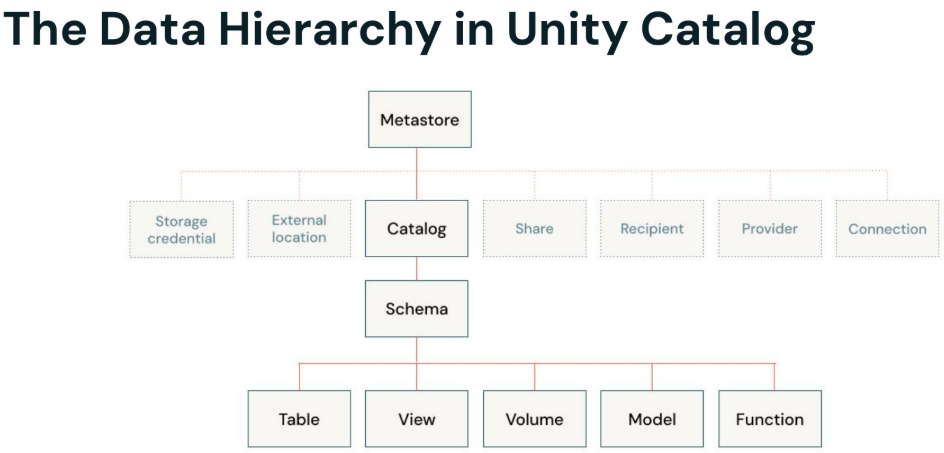

Section 7 · Governance and Security · Quelle: Kurs 6, DP 1.1
Unity Catalog ist die zentrale Governance-Schicht der Databricks-Plattform: Statt Berechtigungen getrennt auf Dateisystem-, Metastore- und Data-Warehouse-Ebene zu pflegen, verwaltet Unity Catalog Zugriffsrechte, Herkunftsnachweise (Lineage) und Metadaten für alle Daten- und KI-Objekte an einer einzigen Stelle. Das erleichtert nicht nur den Alltag, sondern ist auch die Grundlage dafür, Compliance-Anforderungen wie DSGVO oder CCPA überhaupt nachweisbar umzusetzen – wer wann worauf zugegriffen hat, lässt sich lückenlos dokumentieren.
Unity Catalog organisiert alle Datenobjekte in einem konsistenten Drei-Ebenen-Namespace. Ganz oben steht der Metastore – pro Cloud-Region wird typischerweise genau einer angelegt und mehreren Workspaces zugewiesen. Darunter folgen Catalogs, die als primäre Einheit der Datenisolation dienen und oft Organisationseinheiten oder Umgebungen (z. B. dev/prod) abbilden. Jeder Catalog enthält Schemas (vergleichbar mit Datenbanken), und darin liegen schließlich die eigentlichen Objekte: Tables, Views, Volumes (für unstrukturierte Dateien), Models und Functions. Eine Tabelle wird dadurch immer über den vollen Pfad catalog.schema.tabelle referenziert.

Storage-Speicherorte lassen sich auf Metastore-, Catalog- oder sogar Schema-Ebene festlegen, sodass Unternehmen bestimmte Datenkategorien gezielt in eigenen Cloud-Speicherorten isolieren können – etwa um regulatorische Vorgaben zur Datenresidenz zu erfüllen. Volumes verdienen besondere Erwähnung: Sie verwalten rohe, nicht-tabellarische Dateien (Konfigurationen, Checkpoints, Bilder) und ersetzen damit den älteren, unkontrollierten Zugriff über DBFS.
Der Zugriff auf jedes Objekt wird über Access Control Lists (ACLs) gesteuert, die sich in drei Fragen zusammenfassen lassen: Wer (das Principal – ein User, ein Service Principal oder, empfohlen, eine Gruppe), was (das Securable Object, z. B. eine Tabelle oder ein Schema) und wie (das Privilege, z. B. SELECT, MODIFY, USE CATALOG). Rechte werden über GRANT vergeben und über REVOKE wieder entzogen.
Unity Catalog unterstützt dabei zwei grundsätzliche Strategien. Bei der vererbten Vergabe setzt man Rechte auf einer hohen Ebene (z. B. dem Catalog), und alle darunterliegenden Schemas und Tabellen – auch künftig neu erstellte – erben diese Rechte automatisch. Das ist bequem, birgt aber das Risiko, versehentlich zu viel freizugeben. Die Alternative ist die explizite Vergabe auf einzelne Objekte: aufwendiger in der Pflege, dafür präzise und sicher.
-- Vererbte Rechte: alle Konten-Nutzer dürfen im gesamten Catalog lesen GRANT USE CATALOG, USE SCHEMA, SELECT ON CATALOG kunden_catalog TO `account users`; -- Explizite Rechte: nur Zugriff auf ein einzelnes Schema und eine einzelne View GRANT USE SCHEMA ON SCHEMA kunden_catalog.pii_data TO `account users`; GRANT SELECT ON VIEW kunden_catalog.pii_data.customers_gold_view TO `account users`; -- Rechte wieder entziehen REVOKE USAGE ON SCHEMA pii_data FROM `account users`; REVOKE SELECT ON VIEW pii_data.customers_gold_view FROM `account users`; -- Vergebene Rechte prüfen SHOW GRANTS ON SCHEMA pii_data; SHOW GRANTS ON VIEW pii_data.customers_gold_view;
Ein wichtiges Detail für den Aufbau sicherer Datenprodukte: Wenn eine View auf einer zugrunde liegenden Tabelle basiert, benötigen Nutzer der View keinen direkten Zugriff auf die Basistabelle – entscheidend ist, dass der Eigentümer der View über die nötigen Rechte auf die Basistabelle verfügt. Damit lässt sich eine Gold-View gezielt freigeben, während die zugrunde liegende Silver-Tabelle mit den vollständigen Rohdaten geschützt bleibt.
Tags sind Schlüssel-Wert-Paare, die sich auf nahezu jedes Unity-Catalog-Objekt anwenden lassen – auf Catalogs, Schemas, Tabellen und sogar auf einzelne Spalten. Sie werden vor allem für Datenklassifizierung (z. B. Markierung von DSGVO-relevanten Spalten), Suche und Lifecycle-Management eingesetzt. Pro Objekt sind bis zu 20 Tags möglich.
-- Tabellen-Tags setzen
ALTER TABLE customers_silver
SET TAGS (
'quality' = 'silver',
'domain' = 'customer'
);
-- Spalten-Tag zur Compliance-Kennzeichnung
ALTER TABLE customers_silver
ALTER COLUMN customer_id SET TAGS ("compliance" = "GDPR");
Da alle Metadaten zentral vorliegen, kann die Databricks-Suche direkt nach Tags filtern – etwa über die Syntax domain:customer in der Suchleiste. Ergebnisse werden dabei automatisch anhand der Berechtigungen des suchenden Nutzers gefiltert: Wer keinen Zugriff auf ein Objekt hat, sieht es auch in der Suche nicht. Alternativ lassen sich Tags direkt per SQL über die INFORMATION_SCHEMA abfragen:
SELECT * FROM INFORMATION_SCHEMA.TABLE_TAGS WHERE TABLE_NAME = 'customers_silver'; -- Analog verfügbar für weitere Objekttypen: -- INFORMATION_SCHEMA.CATALOG_TAGS, SCHEMA_TAGS, COLUMN_TAGS, VOLUME_TAGS
Unity Catalog erfasst automatisch die Herkunft und den Fluss von Daten – ganz ohne zusätzliche Konfiguration. Im Lineage-Tab von Catalog Explorer lässt sich für jedes Objekt sowohl Upstream (woher stammen die Daten, welche Quellen wurden verwendet) als auch Downstream (welche Tabellen, Dashboards oder Jobs verwenden dieses Objekt) einsehen. Lineage wird nicht nur für Tabellen und Spalten getrackt, sondern auch für Notebooks, Lakeflow Jobs, Dashboards und Dateien. Das ist essenziell für Impact-Analysen: Bevor eine Spalte gelöscht oder umbenannt wird, lässt sich sofort erkennen, welche nachgelagerten Reports oder Pipelines davon betroffen wären.
Unity Catalog stellt umfangreiche System-Tables im Catalog system bereit, mit denen sich der Zustand des gesamten Lakehouse per SQL analysieren lässt – ideal, um Audit-Anfragen oder Compliance-Nachweise zu beantworten.
| System-Table | Typische Fragestellung |
|---|---|
system.information_schema.tables | Welche Tabellen existieren in einem Catalog? Wer hat sie zuletzt geändert? |
system.information_schema.table_privileges | Wer hat welche Rechte auf eine bestimmte Tabelle? |
system.billing.usage | Wie viele DBUs wurden von welchem Nutzer/Job verbraucht? |
system.access.audit | Wer hat wann auf welches Objekt zugegriffen oder es gelöscht? |
system.access.table_lineage | Welche Tabellen wurden aus welcher Quelltabelle erzeugt? |
-- Wer hat zuletzt Zugriff auf eine sensible Tabelle bekommen? SELECT grantee, table_name, privilege_type FROM system.information_schema.table_privileges WHERE table_name = 'customers_silver'; -- Wer hat eine Tabelle gelöscht? (Audit Log) SELECT user_identity.email, event_time FROM system.access.audit WHERE request_params.full_name_arg = 'kunden_catalog.pii_data.customers_silver' AND service_name = 'unityCatalog' AND action_name = 'deleteTable';
system.access.audit-Tabelle bildet den Audit Log als abfragbare Tabelle ab und beantwortet detailliert, wer wann auf welches Objekt zugegriffen hat (Logins, Datenzugriffe, Start/Stopp von Compute-Ressourcen). Damit Audit-Logs überhaupt in den System-Tables erscheinen, müssen sie zunächst auf Account-Ebene aktiviert und konfiguriert werden. Die Einträge werden im JSON-Format erfasst und standardmäßig 90 Tage aufbewahrt – für eine dauerhafte Aufbewahrung (z. B. für mehrjährige Compliance-Nachweise) sollten Audit-Daten regelmäßig in eine eigene, langfristig aufbewahrte Tabelle exportiert werden.